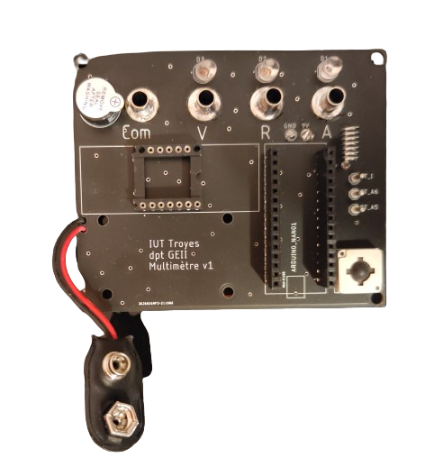

SAÉ — Conception d'un multimètre

Résumé
SAÉ sur 3 jours : concevoir un multimètre fonctionnel pour mesurer courants, résistances et tensions.
- Théorie : Automatisme (Karnaugh), électronique (pont diviseur). Routage Tinkercad.
- Pratique : Soudure composants sur CI + tests.
- Programmation : Programme Arduino — calibres auto, LEDs, affichage 7 segments.
Bilan : mise en pratique des compétences du S1 sur un cas concret.
AC11.01 : Analyse fonctionnelle — découpage multimètre.
AC11.02 : Prototype — soudure + programme Arduino.